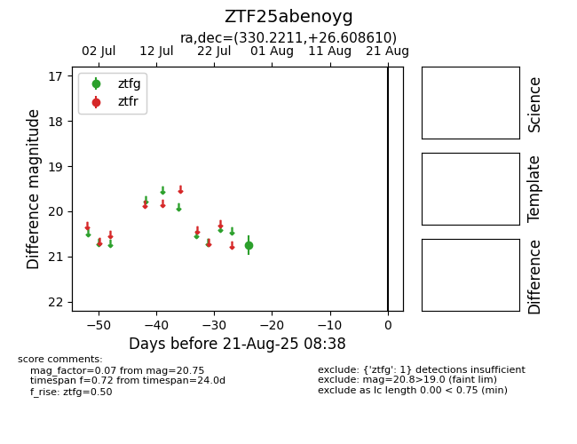

Target ZTF25abenoyg at 2025-08-21 08:38, see:
FINK: fink-portal.org/ZTF25abenoyg
Lasair: lasair-ztf.lsst.ac.uk/objects/ZTF25abenoyg
ALeRCE: alerce.online/object/ZTF25abenoyg
alt names
ZTF25abenoyg (ztf,alerce)
coordinates:
equatorial (ra, dec) = (330.2211,+26.60861)
galactic (l, b) = (82.0067,-22.40426)
photometry
last ztfg=20.75
1 ztfg detections
